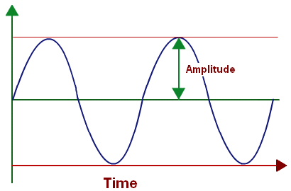
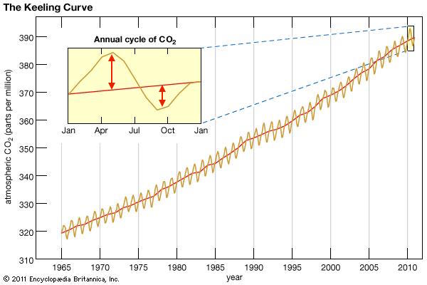

Amplitude

http://images.tutorvista.com/cms/images/39/amplitude-of-the-wave.png
The Keeling Curve

https://media1.britannica.com/eb-media/60/104260-004-0D602267.jpg
1. There has been an increase in the seasonal amplitude of atmospheric CO2 in the Northern Hemisphere since the 1960, an increase in 32-59%, or an increase of 1.3 to 2 Pg C seasonal exchange.
2. This increase in seasonal exchange represents accumulation of carbon on land during the growing season and release during dry season.
3. Ecological changes in boreal and temperate forests have led to an increase in the amplitude of NEP and in increase in the seasonal carbon exchange.
4. All tested models require the NEP amplitude of boreal forests to have increased by at least 53%, the most of any region.
5. Impacts from increased emissions from fossil fuels and the burning of biomass are minimal (< 8%).
6. Current models do not accurately predict these increases in amplitude indicating that they have and will continue to underestimate ecological changes.